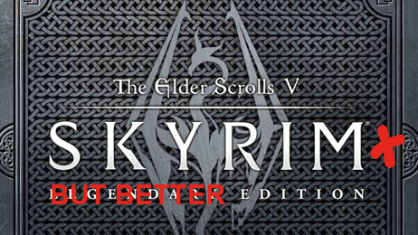

We've all heard the stories of legendary heroes. Fearless adventurers destined to the highest callings,
with hearts of golds and wills of steel. But what about all these other adventurers? Simple citizen who set out on their own adventures, delving
into an unhospitable wilderness, struggling to even survive and to keep the will to continue. Live one of such such lives, and make your own way
throught a strange and captivating world, and weave your own stories. But be aware, as not all tales have happy endings.
Name :
Cult Of the Gun God
Genre :
Old School Multiplayer FPS
Synopsis :
Indulge in some fast paced FPS action! Cult of The Gun God is an old-school inspired with an emphasis on social interaction and
player expression. Bunny hop and rocket jump you way to victory with a wide variety of weapons and gamemodes

Name :
Chronicles Of Generia : The Reckoning's Edge : Absolution : Syndicate of ...
Genre : Every
Synopsis :
Watch as an indie team of 4 people make a game that's 3x times bigger in content and 10x times as complex,
without any budget and in, like, 3 months, tops. It's totally gonna have a rich and randomly generated world, with random NPCs and procedurally generated
story lines that will somehow be richer than an actually written one. We swear.